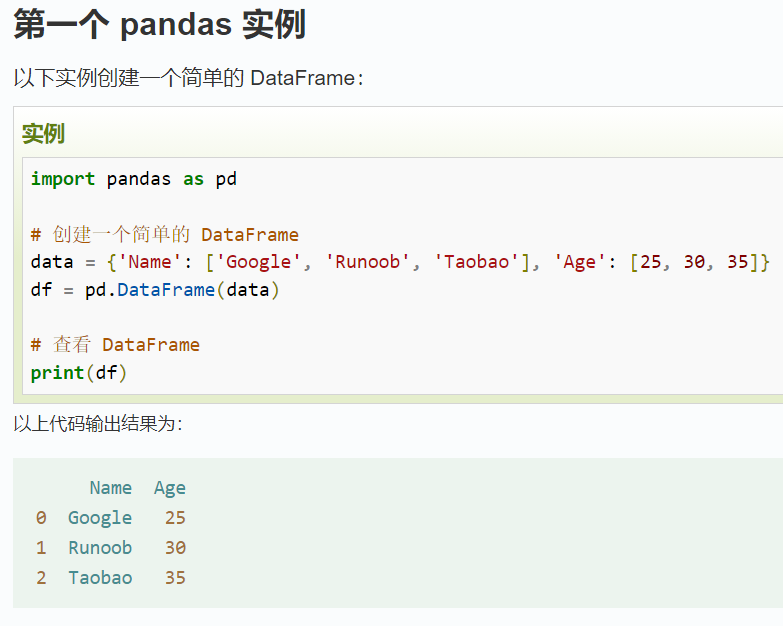
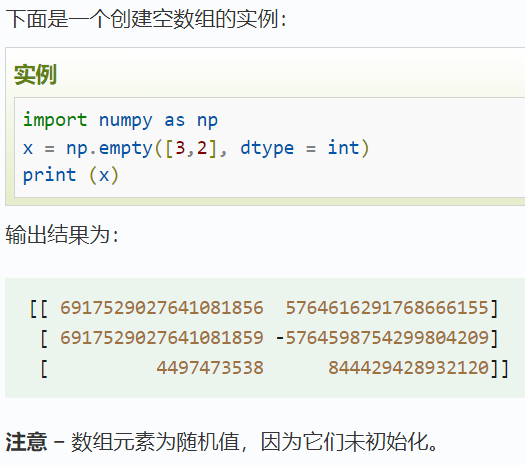

Pandas 数据处理库
Pandas 是 Python 中用于数据处理和分析的强大库，提供了高效的 DataFrame 数据结构和丰富的数据操作功能。
核心功能
快速入门

基本操作示例
import pandas as pd
# 创建示例数据
data = {
'姓名': ['张三', '李四', '王五', '赵六'],
'年龄': [22, 25, 23, 24],
'专业': ['计算机', '数学', '统计学', '计算机']
}
# 创建DataFrame
df = pd.DataFrame(data)
print(df)
数据筛选操作：
# 筛选计算机专业的学生
cs_students = df[df['专业'] == '计算机']
print(cs_students)
# 筛选年龄大于23岁的学生
older_students = df[df['年龄'] > 23]
print(older_students)
跳转到官方教程
NumPy 数值计算库
NumPy 是 Python 科学计算的基础库，提供了高性能的多维数组对象和数学函数库。
核心功能
快速入门

基本操作示例
import numpy as np
# 创建数组
arr = np.array([1, 2, 3, 4, 5])
print(arr)
# 数组运算
print(arr + 10)
print(arr * 2)
跳转到官方教程
Matplotlib 数据可视化库
Matplotlib 是 Python 中最常用的数据可视化库，支持绘制各种静态、动态图表。
跳转到官方教程
Seaborn 高级可视化库
Seaborn 基于 Matplotlib 构建，提供了更美观的默认样式和更高级的统计可视化功能。
跳转到官方教程
Scikit-learn 机器学习库
Scikit-learn 是 Python 中最流行的机器学习库，提供了简单高效的工具用于数据挖掘。
跳转到官方教程
Tableau 数据分析工具
Tableau 是一款强大的商业智能工具，支持拖放式操作，可快速创建交互式仪表盘。
跳转到官方教程
Power BI 数据可视化工具
Power BI 是微软推出的商业分析工具，可将数据转换为交互式可视化和仪表盘。
跳转到官方教程